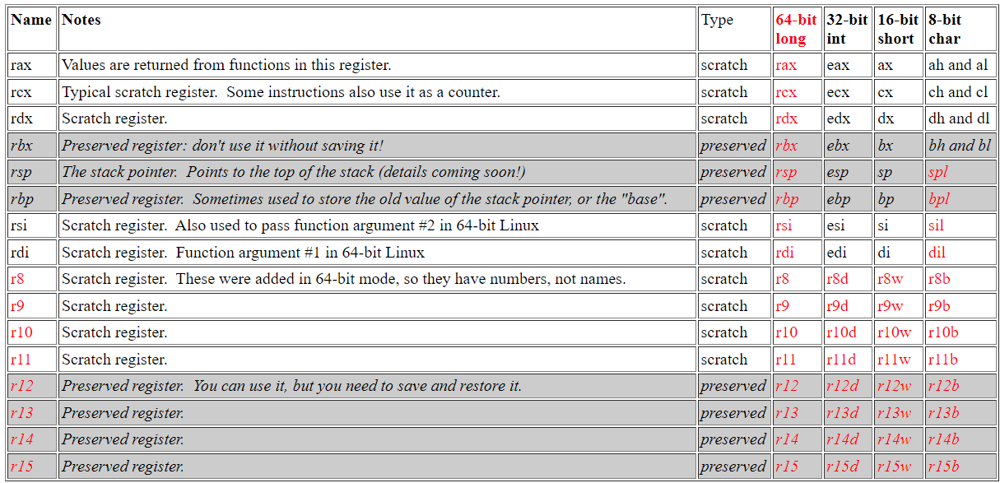
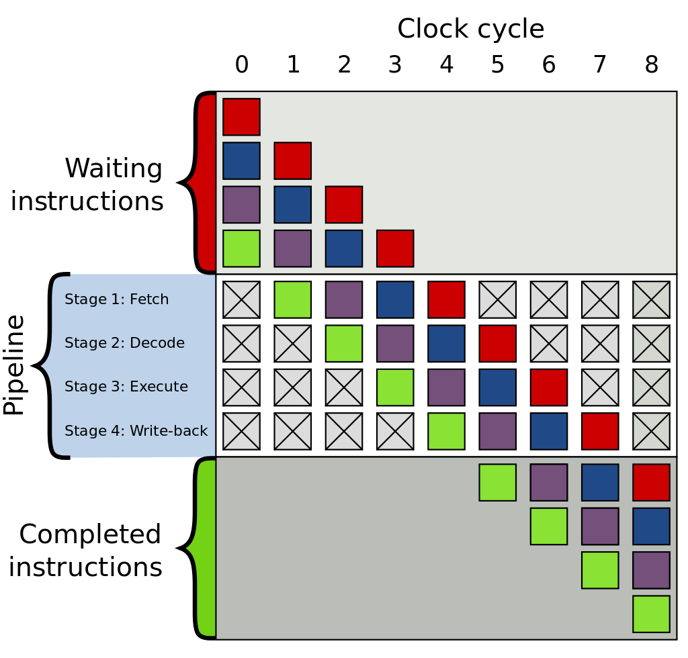

How a CPU works
Read: Stuff I found interesting about CPUs
Made by:
Soham Sen
## What even is the purpose of a CPU? At the grassroots level, a CPU just does the following: 1. Read some instructions from the memory on what to do 2. If required, load data from memory 3. Perform some computations on the data 4. Store the data back into the memory 5. Go back to step 1
## More formally... It is known as the machine cycle, consisting of three steps: 1. **Fetch** instructions 2. **Decode** the instruction and understand what to do 3. **Execute** the instruction <img data-src="img/machine-cycle.png" style="vertical-align: middle;margin-left:5em;" />
## But wait, what is a register? You might be aware of RAM, which is used to temporarily store data that is used by a CPU. It is much faster to read or write data onto RAM than a hard disk, at the cost of reduced size. Similarly, a register can be considered as a temporary storage space that is accessed directly by the CPU. While it might take the CPU around 62 ns to access the RAM, it can access registers in less than 1 ns! This comes at a greater cost, with registers typically being less than 64 bits. <div style="text-align:center;"> <img data-src="img/latency-vs-size.png" style="height: 500px;" /> </div>
## Some common registers * **Instruction register** storing the instruction currently being executed. * **Data registers** holding numerical data, and sometimes even floats, characters or other values. * **Address registers** holding addresses, typically RAM memory addresses. * **Stack register** which points to the top of the _stack_, that is, the location at the top of the stack. * ...and many more architecture-specific ones, check the [Wikipedia article](https://en.wikipedia.org/wiki/Processor_register#Types) for more!

## The instructions The instructions that a CPU supports varies between each architecture. These instructions are written in Assembly language (or directly hex if you're daring enough) and processed by the CPU directly.
## Some common instructions Let's learn some basic instructions for x86! 1. <u>`mov a b`</u> Move the contents of b into a 2. <u>`push a`</u> Push the contents of a into the top of the stack. 2. <u>`pop a`</u> Pop the top element of the stack into a. 3. <u>`add a b`</u> Add a and b, and then store the result in a. (a = a + b) The full list of instructions for the x86 instruction set is [available here](https://www.cs.virginia.edu/~evans/cs216/guides/x86.html).
## Modern CPU Magic: Branch prediction There is a very famous [Stackoverflow question](https://stackoverflow.com/questions/11227809/why-is-processing-a-sorted-array-faster-than-processing-an-unsorted-array) on why processing a sorted array is faster. Much faster in fact, almost 6 times faster than an unsorted array. To understand why this happens, we need to learn about pipelining in CPUs first.
## Pipelines With pipelines we can increase the throughput of instructions (even though the latency stays same). For example, while one instruction is being executed, the next one can be decoded and the one after that can be fetched in parallel, since all three are being run by different circuits.

## But what happens with conditional statements? When we face conditional statements (like if-else), we are faced with a problem when using pipelines: **We don't know whether there will be a jump to some other instruction, or it will continue to the next instruction!** One naive way to solve this problem will be to process one instruction at a time, but this will make a CPU slower because we won't be executing pipelines in parallel anymore.
## Where branch prediction steps in Branch prediction is used to predict if a conditional jump will be executed or not (will it continue to the next instruction, or will it jump to the next one?) Say we are predicting in advance that the conditional jump will _not_ be executed, so in the other pipelines, we continue to process the instructions _after_ the conditional jump. If it turns out that the conditional jump was false indeed (that is, no jump), we will already have been processing the next instructions and will not have to wait till the jump was executed.
## The cost of misprediction If we mispredict, we will have to throw away the next instructions that were processed, and start again from the start. This is what results in the slow executing in the Stackoverflow question. Since the data is random, we are mispredicting a lot of branches, which essentially makes the CPU run sequentially. A modern CPU has a lot of pipelines, so throwing away the processed instructions is equivalent to wasting 10-20 CPU cycles.
## Types of branch prediction Some common ones are: 1. <u>**Static**</u>: Assume all conditional jumps are always false (or true). 2. <u>**Dynamic**</u>: Depends on the last jump. Such as, if the last two jumps were false, the next one will be false too. 3. <u>**Neural**</u>: Use machine learning and magic to predict branches, used by many modern CPUs.
# ありがとう！ TL note\: Thanks! contact@sohamsen.me sohamsendev@oksbi